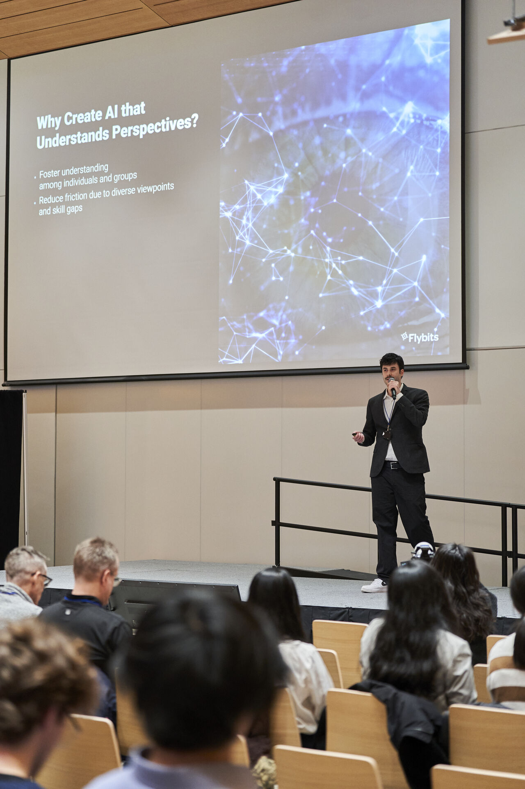

Daniel Platnick
Let's create AI to solve the world's most complicated problems.
Senior AI Research Scientist leading Perspective‑Aware AI research at Flybits Labs in collaboration with MIT Media Lab. Passionate about deep learning, signal processing, and graph theory. In my spare time I enjoy reading recent AI research, playing piano, and talking with friends.
Get in touchAbout
I research Perspective‑Aware AI (PAi): neurosymbolic systems that build graph‑based Chronicles from multimodal data so agents can reason from diverse viewpoints. My work spans identity modeling, generative agents, and XR personalization.
Find my scholarly work on Google Scholar.
Research Interests
Perspective‑Aware AI
Graph‑based identity representations enabling agents to reason through evolving perspectives.
Generative Agent Systems
Agent‑based simulations augmented with Chronicles for long‑term consistency.
Neurosymbolic Methods
Combining deep learning and symbolic reasoning for interpretable decision‑making.
Experience
Senior AI Research Scientist – Flybits
Jan 2025 – Present (Full‑time)Collaborating with MIT Media Lab on neurosymbolic PAi & Human‑AI Agents. Keynote on PAi at UofT AI's ConferenceX (Jan 25 2025).
AI Researcher – Flybits
Jun 2024 – Dec 2024 (Contract)Co‑authored PAi papers at IEEE HPEC and MDPI Information.
Graduate Student Researcher – Toronto Metropolitan University
Sep 2023 – Dec 2024Deep learning & automated planning under Rick Valenzano. Published GANsemble at CAIC 2024.
Faculty Affiliate Researcher – Vector Institute
Aug 2023 – Nov 2024Analyzed heuristic search; published runtime comparisons at ICAPS 2024 (HSDIP).
Lead ML Engineer – Vosyn
Jan 2024 – May 2024Invented Preset‑Voice Matching; paper at ACL 2024 PrivateNLP.
Teaching Assistant – Toronto Metropolitan University
Sep 2022 – Aug 2023Taught CPS109 & CPS118; designed labs and graded assessments.
Machine Learning Researcher – Ryerson University
May 2021 – Oct 2022Deep unfolding for stripe noise removal; paper at IJCNN 2022.
Education
MSc Computer Science – Toronto Metropolitan University
Sep 2022 – Dec 2024 | GPA 4.25/4.33Thesis on escaping uninformative regions in combinatorial search. Published 5 AI papers (first author on 4).
BA International Economics & Finance – Ryerson University
Sep 2014 – Dec 2021Dean's List; Table Tennis A‑Team; ranked #1 Smash Bros Melee at Ryerson.
Selected Publications
-
Perspective-Aware AI in Extended Reality
Paper -
Enabling Perspective-Aware AI with Contextual Scene Graph Generation
Paper -
Perspective-Aware AI for Augmenting Critical Decision Making
Paper -
Preset-Voice Matching for Privacy-Regulated S2ST Systems
Paper -
Expected Runtime Comparisons Between BrFS & RRW
Paper -
GANsemble for Synthetic Microplastics Data
Paper -
Deep Unfolding for Iterative Stripe Noise Removal
Paper
Projects
Foundation Swarm
RL‑tuned specialist agents optimizing group rewards.
PAi Dataset (PAiD)
Synthetic multimodal identity dataset for PAi training.
Generative Air Traffic Simulation
Modeling pilots & controllers with PAi Chronicles.
Contact
Open to collaborations, speaking engagements, and advisory roles.
Email: daniel.platnick@flybits.com